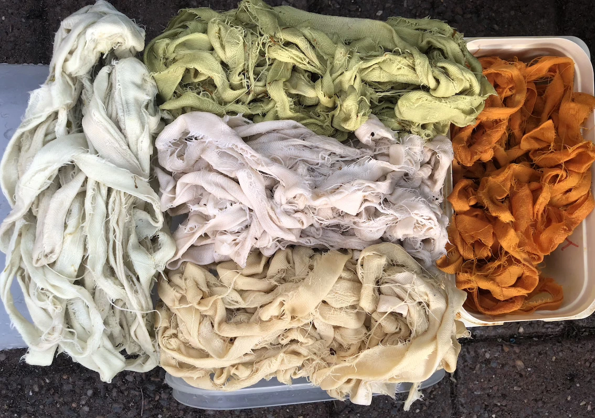

(Laundry) Basket Case
Having completed my dyeing experiment, I had a selection of slightly coloured strips of fabric.
I planned to weave strips of cloth with the aim of fashioning a laundry bag. I was tired of the handles falling off our laundry carriers and I didn't want to invest in yet more plastic.
I should really have checked how much the tablecloths frayed before embarking on this venture. It really didn't help that they frayed a lot! Still, I was committed to using them, and had my plan, so away I went cutting and rolling strips.
I retrieved a tapestry frame from the loft and proceeded to stretch a piece of tablecloth between the bars. I could've used individual strips to form the warp of my weaving, but thought slashing slits in the cloth as I went would be better. It wasn't! The cloth wasn't sufficiently robust. But I moaned, fretted and managed.
Eventually I produced a reasonably rectangular woven base for my laundry bag.
And could have left it like that, but tried ironing old plastic bags onto the surface to try to make a sturdier base. Some of the bags were better at this than others and formed a crisp sheet of plastic. Others just shrivelled to nothing and I wished I hadn't started. I'd maybe skip that step if I tried doing this again.
I repeated the weaving process for the two sides of the bag, this time using some of the strips I'd dyed. I used multiple layers of the cloth to cover the base and form the ends. Then stitched up the corners. Plaited strips of cloth were used to make handles.
So it looks OK and can transport a significant amount of laundry, but is floppier than I'd envisaged.
With more tablecloth fabric to use up and quantities of fabric left over from various sewing projects, I was undaunted and determined to try again.
Here's a hint of what I'm trying this time...